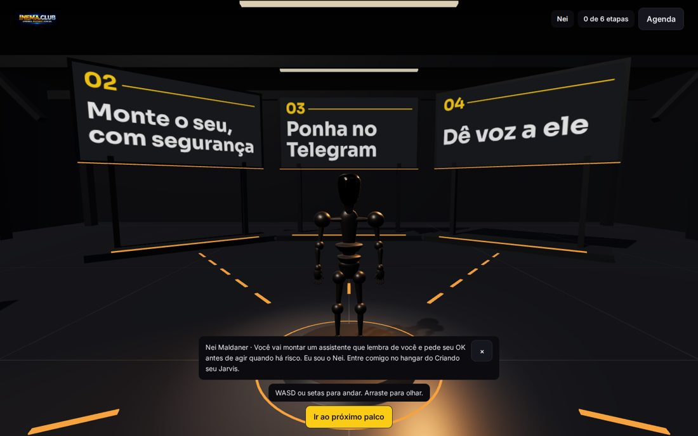
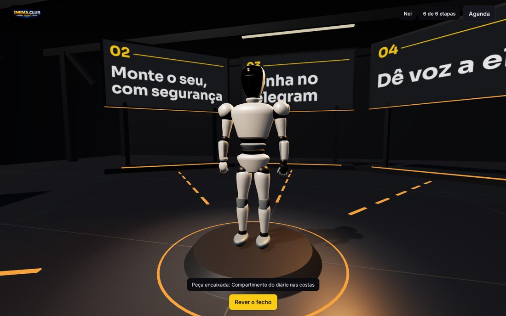

A Imersão Jarvis 3D é um evento grátis que abre no navegador. Ela serve para quem usa IA todo dia e queria um assistente só seu, aqui chamado de Jarvis. Você percorre 6 etapas em um hangar, um galpão virtual em 3D. Cada etapa traz vídeo ou material, uma tarefa e um sinal claro de que ficou pronta. O caminho leva a um assistente que lembra de você e pede o seu OK antes de uma ação de risco. Você visita o evento pelo computador ou pelo celular, e as tarefas de montagem são feitas no computador.
Veja por dentro em 3 minutos
O vídeo mostra o hangar funcionando e o robô ganhando peças. Ele também conta, para quem cria páginas, como o projeto foi construído.
Da lista de links a um lugar onde você faz acontecer
O conteúdo já existia em uma página do INEMA, com cursos, guias e vídeos. O hangar coloca tudo em ordem e mostra o quanto você já avançou.
😕 Em uma página comum
Você vê muitos cursos e vídeos juntos e precisa decidir sozinho por onde começar.
Nada mostra o que você já fez nem o que falta para o assistente funcionar.
🤖 No hangar
Cada etapa tem um espaço próprio, o palco, com o que você ganha, o material, a tarefa e como saber que terminou.
Ao marcar a etapa, uma parte do robô encaixa. Você enxerga o seu avanço.
🧠 Ele lembra de você
Na etapa 2, o assistente passa a guardar o que precisa de uma conversa para a outra.
🔒 Risco passa por você
Ele trabalha em uma cópia separada, sem as suas senhas, e pede o seu OK antes de uma ação de risco.
🗺️ Ordem clara
São 6 etapas, do primeiro teste até a melhoria de toda semana.


O que muda quando o assistente é seu
Cada situação abaixo corresponde a uma etapa do evento.
💬 "Já te expliquei esse relatório"
Hoje: a cada conversa nova, você repete o padrão do relatório e as regras do seu trabalho.
Com o seu Jarvis: ele lembra do que você contou em outra conversa.
📱 Longe do computador
Hoje: a IA que trabalha para você fica presa à tela da sua máquina.
Com o seu Jarvis: com o computador ligado e o assistente rodando, você fala com ele pelo Telegram, e ele só aceita comandos do dono.
😰 Medo de um estrago
Hoje: você não sabe até onde a IA pode mexer.
Com o seu Jarvis: ele fica em uma pasta restrita, sem suas senhas, e pede o seu OK antes do que é arriscado.
🔁 O mesmo erro de novo
Hoje: a falha acontece, você corrige na hora e ela volta.
Com o seu Jarvis: a falha vai para um diário, e a revisão da semana mostra o que ajustar.
Um palco, do começo ao fim
- Você chega ao palco
e vê o que vai ganhar com aquela etapa. - Assiste no telão ou abre o material
Nos palcos com vídeo, ele toca ali mesmo. - Faz a tarefa no seu computador
O painel diz o que fazer e como saber que ficou pronto. - Marca como feita
A peça encaixa no robô, e o seu progresso fica salvo no navegador.

Uma oficina, 6 bancadas e 8 peças
Pense no hangar como uma oficina. Cada etapa acontece em uma bancada, chamada de palco, e cada peça do robô representa uma capacidade do seu assistente. O evento chama esse assistente de agente: uma IA que, além de responder, executa tarefas. O terminal é a janela do computador onde você cola comandos. O Linux é um sistema operacional, como o Windows e o macOS, e o Ubuntu é uma versão dele.
Entenda como um agente funciona
Você roda um agente com IA grátis no seu computador e vê como ele usa as ferramentas.
Pede: computador e terminal. O curso usa Python, uma linguagem de programação. A IA é gratuita e roda no seu computador.Monte o seu, com segurança
Seu assistente lembra de você e trabalha em uma cópia separada, sem acesso às suas senhas.
Pede: computador, terminal e copiar comandos, sem escrever código. Sem pagar e em um computador comum, ele lembra o que você pede, mas quase não executa tarefas. Para agir melhor, use uma boa placa de vídeo ou uma IA paga na nuvem. A cópia separada usa o Docker, um programa que isola o assistente. Curso testado no Ubuntu.Ponha no Telegram
Você fala com um Jarvis que reconhece um único dono e segue as regras que você escreveu.
Pede: computador para montar. Depois, você conversa pelo celular. Quem seguiu Seu Jarvis seguro faz isso na aula 5. Ela foi testada com um Telegram simulado, então a conexão real pode precisar de ajustes.Dê voz a ele
Você conversa por voz. Ele ouve e responde no seu computador.
Pede: um computador forte: Mac com chip da Apple e 16 GB de memória ou mais, ou PC com placa de vídeo NVIDIA de 12 GB ou mais. A montagem usa o Claude Code ou o Codex, assistentes de programação. O guia da etapa traz os detalhes.Veja tudo numa tela
Um painel mostra as rotinas automáticas da sua máquina e o que ficou pendente, sem mexer em nada.
Pede: computador com Python. As rotinas automáticas são lidas do Linux.Faça ele melhorar toda semana
O diário de falhas mostra o que ajustar, e os números ajudam a decidir o que ele pode fazer sozinho.
Pede: um assistente já montado, para acompanhar.Você não precisa fazer tudo. Os cursos das etapas são independentes, e alguns montam um agente próprio. Escolha um caminho e siga nele. Em Seu Jarvis seguro, a aula 5 ensina a ligar o assistente ao celular, pelo Telegram.
As 8 peças, em palavras comuns
🗣️ Onde ele fala
Terminal, Telegram, voz ou tela.
💡 Qual modelo pensa
A IA que responde. Pode ser trocada sem refazer o assistente.
🪪 Quem ele é
Um arquivo com a identidade e as regras dele.
🧠 Do que ele lembra
O que passa de uma conversa para a outra.
🖐️ O que ele faz
Cada ferramenta permite uma ação e tem limite de uso.
🔒 O que ele não pode
Pasta restrita, sem senhas. Risco pede o seu OK.
✅ Como ele se confere
Testa o que fez antes de dizer que terminou.
📓 Como ele melhora
Um diário do que falhou, usado a cada semana.
⚠️ O que o evento não promete
- O robô do hangar representa o seu progresso. O assistente de verdade nasce das tarefas que você faz no seu computador.
- Marcar uma etapa como feita não confere o seu trabalho. Quem confere é você, pelo item "pronto quando" de cada palco.
- É uma página aberta, sem data e sem transmissão ao vivo. Você vai no seu ritmo.
Escolha o seu ponto de partida
Para entrar no evento, você não instala nada. Escreva um nome para o crachá, se quiser, e escolha entre o hangar 3D e a versão sem 3D. Depois, siga o caminho que combina com você.
🖥️ Primeiro, veja o seu computador
Windows ou macOS: comece pela visita. O caminho sem código ainda não foi testado nesses sistemas.
Linux com placa de vídeo forte: você pode seguir o caminho sem código completo.
Linux sem placa de vídeo forte: o assistente lembra, mas quase não executa tarefas, a menos que você pague uma IA na nuvem, um serviço acessado pela internet.
👀 Só quero conhecer
Entre, ande pelos palcos e veja os vídeos. Funciona no computador e no celular, sem fazer nenhuma tarefa.
🧩 Quero montar sem programar
Vá direto à etapa 2, com o curso Seu Jarvis seguro. Você não escreve código, mas precisa abrir o terminal e copiar comandos. São 9 aulas, cerca de 2h20, fora a instalação. As aulas 6 e 7 usam o Docker.
📱 Quero chegar ao Telegram
O curso Agente por peças monta um agente próprio. É o caminho mais técnico: pede terminal, Python, git e Node.js, e funciona no Linux, no macOS e, no Windows, pelo WSL, o Linux dentro do Windows. A IA vem da sua assinatura do ChatGPT, pelo Codex, ou de um programa instalado no seu computador.
💻 Quero entender por dentro
Comece pela etapa 1, com o curso Sistema de agentes do zero, que roda um agente em Python, uma linguagem de programação.
Você pode conferir como isso foi feito
Duas IAs que programam construíram o evento. O Codex escreveu a programação e o site. O Claude Code escreveu os pedidos, testou em um navegador de verdade e reprovou o que não estava bom. Nada disso é cobrado de quem participa.
O que deu errado no caminho
- O 3D ficou preso em uma caixa pequena
Virou uma imersão em tela cheia. - O robô parecia um boneco
Ganhou um acabamento de robô industrial. - O robô já aparecia pronto antes da primeira etapa
Agora ele começa escuro e ganha as peças conforme você avança. - O vídeo abria no painel lateral
Passou a tocar no telão, no tamanho certo.
Pedidos, respostas, tempo, custo, revisões e capturas estão em Como foi feito.
Antes de você entrar
Quanto custa?
O evento, os cursos e os guias são grátis. Em Seu Jarvis seguro, a IA na sua máquina não tem custo, e a IA na nuvem é paga. O curso Agente por peças usa a sua assinatura do ChatGPT ou uma IA instalada no computador, e a etapa de voz usa o Claude Code ou o Codex na montagem. Esses serviços têm regras e planos próprios, então confira o seu antes de começar.
Preciso de cadastro?
Não. O nome do crachá é opcional, e o progresso fica salvo no seu navegador.
Funciona no celular?
A visita funciona, com controle por toque ou na versão sem 3D. Para montar o assistente, você precisa de um computador.
E se o 3D não abrir?
O evento passa para a versão sem 3D, com a mesma programação e o mesmo progresso.
Preciso saber programar?
Para visitar, não. Para montar sem escrever código, siga Seu Jarvis seguro. Ele pede que você abra o terminal e copie comandos, e duas aulas usam o Docker, um programa que isola o assistente.
Meu computador dá conta?
Depende da etapa, e a de voz é a mais exigente. Seu Jarvis seguro foi testado no Ubuntu. No macOS, não foi testado na prática. No Windows, depende do WSL, o Linux dentro do Windows, e essa combinação também não foi testada.
Dá para falar com ele pelo celular?
Dá, depois de montar, com o computador ligado e o assistente rodando. Em Seu Jarvis seguro, o Telegram é a aula 5. Ela foi testada com um Telegram simulado, então a conexão real pode precisar de ajustes. Agente por peças é outro caminho.
O ChatGPT já não tem memória?
Ele tem recursos próprios de memória. Aqui, você monta um assistente com regras escritas por você, que executa tarefas na sua máquina e pede o seu OK antes do que é arriscado.
O evento monta o assistente por mim?
Não. Ele organiza o caminho, e você faz as tarefas. O robô do hangar só mostra o seu avanço.
E você: o que gostaria que o seu Jarvis lembrasse para não ter de explicar tudo de novo amanhã? Grátis no inema.club, direto na internet.
Transforme uma página sua em um lugar assim
O Claude Code e o Codex são assistentes de programação. Abra um deles na pasta do seu site e cole o pedido abaixo. A IA estuda este projeto, olha a sua página e mostra um plano antes de mudar qualquer coisa.
Leia o projeto "Imersão Jarvis 3D" em https://github.com/inematds/imersao-jarvis-3d (comece pelo README) e veja o processo em https://eventos.inema.club/imersao-jarvis-3d/processo/. Use esse projeto só como referência. Depois olhe a minha página neste projeto e me responda em português simples: 1. O que aqui poderia virar etapas, com material, tarefa e um sinal claro de "pronto"? 2. O que a pessoa veria avançar a cada etapa? 3. Vale a pena fazer em 3D, ou uma versão sem 3D resolve? Não mude nada ainda. Mostre o plano e espere eu dizer sim.
🛠️ Prefere ver os arquivos?
O código é público no GitHub, com as instruções para abrir o evento na sua máquina.